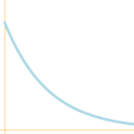
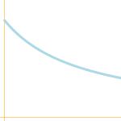
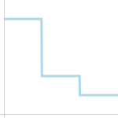
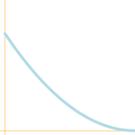

Learning Parameters:
Network Topology:
Activation Fuction:
relu
relu6
elu
softplus
softsign
sigmoid
tanh


Batch Size:
Number of Epochs
Learning Rate Function:
| static | exponential decay | inverse time decay | natural exp decay | piecewise constant | polynomial decay |
|---|---|---|---|---|---|
 |
 |  |  |
 |  |
|
Initial learning rate: |
Initial learning rate: Decay steps: Decay rate: |
Initial learning rate: Decay steps: Decay rate: |
Initial learning rate: Decay steps: Decay rate: |
Boundaries: Boundary values: |
Initial learning rate: Decay steps: End Learning Rate: Power: |
Optimizer:
| Gradient descent optimizer | Adadelta optimizer | Adagrad optimizer | Adagrad DA optimizer | Momentum optimizer | Adam optimizer | Ftrl optimizer | Proximal gradient descent optimizer | Proximal adagrad optimizer | RMS prop optimizer |
|---|---|---|---|---|---|---|---|---|---|
|
Momentum |
|||||||||
Cost functions:
| squared pixel distance | pixel distance |
|---|---|
Random functions for weights
| zeros | gamma | normal | poisson | uniform |
|---|---|---|---|---|
 |
 |
 |
 |
 |
|
Alpha: Beta: Seed: |
Mean: Standard deviation: Seed: |
Rate parameter: Seed: |
Minimum value: Maximum value: Seed: |
Random functions for biases
| zeros | gamma | normal | poisson | uniform |
|---|---|---|---|---|
|
|
|
|
|
|
Alpha: Beta: Seed: |
Mean: Standard deviation: Seed: |
Rate parameter: Seed: |
Minimum value: Maximum value: Seed: |